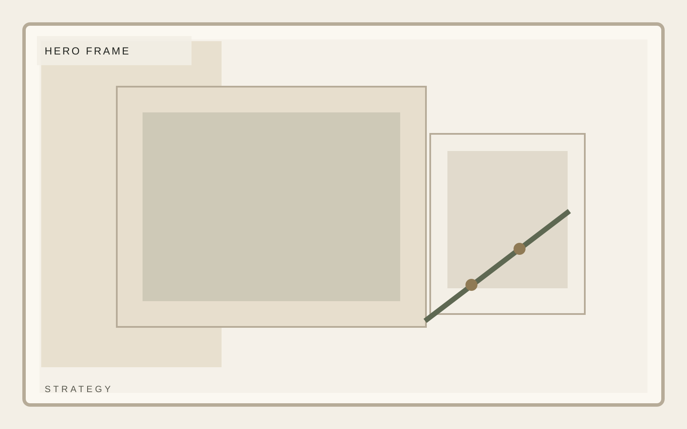
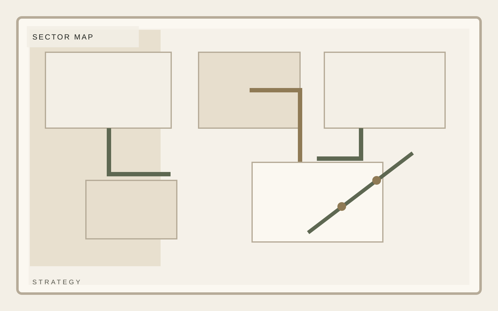
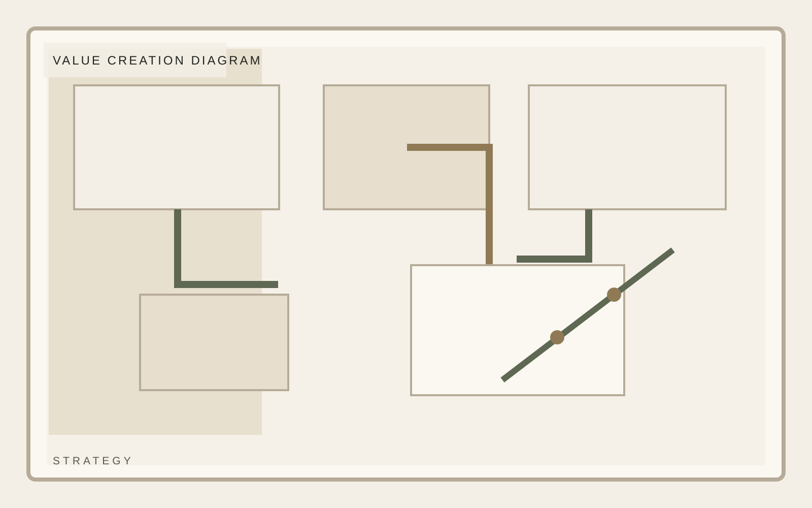

Institutional investment
A mandate built around underwriting discipline and operating clarity.
A composed private investment platform focused on durable middle-market businesses, disciplined underwriting, and practical value creation. Strategy belongs in boundaries, not slogans.
Focus
North American middle market
Hold posture
3 to 7 year horizon
Approach
Operator-led value creation

Institutional investment
Mandate
The mandate section should turn strategy into boundaries. What qualifies, what does not, and what kind of partner behavior the firm expects should all be legible.
Selective mandate
Operator context
Calm reporting


Institutional investment
Sectors
Sector coverage is better when it is selective. A narrower set of sectors with conviction will always read stronger than a wide generic spread.
Selective mandate
Operator context
Calm reporting
Institutional investment
Value Creation
Value creation must be described in operational terms. Replace abstract promises with specific levers, pacing, and reporting behavior.
Selective mandate
Operator context
Calm reporting
Institutional investment
Criteria
Criteria is where discipline becomes visible. This section should make the audience believe the firm knows exactly what it is willing to underwrite.
Selective mandate
Operator context
Calm reporting